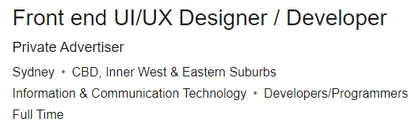

Industry Data
Wildcats Ideal Jobs and How they Rank
Written by Glenn Tang s3601278
Software Engineer
A job that is always in need for any business that is growing with IT. Software Engineers are always on the forefront with creating and innovating the business foward.

Machine Learning Engineer
As we evolve with technology, the demand for more automation of smaller and more repetitive tasks allows for jobs such as these. Prime examples of these would be in the car manufacturing industry where a lot of the assembly line tasks are automated.
Developer/Front end UI/UX Designer
Development is a necessity for any business that is wanting to grow with IT. As the demand of increases to become a more digital society, businesses will need to innovate themselves to set them apart, making this a well needed job withint he industry.
Front end UI/UX will always be in demand as users are always in the forefront when visiting a website and how their experience is. Returning customers are the ones that help retain business and increase growth.

Business Consultant
Intertwined with the different aspects of a business, consultants are to align with the different departments to achieve the overall business goals is a necessity.
Enterprise Architect
This brings commercial requirements of a business and brings it to a reality on a technical level, a job that is well needed in an industry that is still evolving with IT.

IT Administrator
Regardless of the industry with the job ad listed, IT Administrators are always in demand with the evolution of IT within a business.

Identifying different skillsets that are required for these jobs
General Skills

Communication - Spoken and Written
This skill usually will be required mostly in English working within Australia as it’s the country’s most spoken and acknowledged language, both forms of communication will be used throughout the job physical and technological.
Problem Solving
A skill that is needed to aid in any issues that may arise from working within the business, whether it’d be basic IT admin issues to more complicated coding issues, problem solving will come in different formats.
Collaboration and working with other departments (team work)
Within the field of IT no matter which job title you hold, there will always be a need to collaborate and work with different departments and clients within a business, this will be to ensure that the scope of the project will be completed in a manner that will satisfy all
Proficiency in Microsoft 365 with a general understanding of Adobe
Office, Excel, PowerPoint, Outlook and even Photoshop are becoming more and more of a basic requirement that initially was an IT specific skill, now has moved to a more general need to know understanding
Meeting the demand of the client
- Ensure any issues that client may present be solved
- Any requests with deadlines and providing reasonability of the scope
IT Specific Skills

- HTML/CSS
- Both front and back end to ensure that their current web operations are smooth for the user’s experience. Ability to identify issues and make adjustments to the required scope where needed
- SQL - Basic Understanding
- This would be to create and find specific queries and generate reports to allow for specific data to be presented to any parties
- Python
- Python is known to be one of the easiest forms of coding since it uses a plain English format. Seemingly, one of the types of coding that a lot of people are starting to learn
- Understanding and Usage of Cloud-Based Platforms
- Since the digital world is slowly integrating cloud-based platforms into their business, a knowledge of how to efficiently use any cloud-based platforms is becoming more and more relevant
- JavaScriptt
- An essential type of code that incorporates into most web development programs that creates its own virtual environment
Wildcats V Data
Most of the skills that’s required from an IT lens the team have a very good basic understand of most of the skills that are listed within the top 10 of the Burning Glass data. The general skills within the terms of demand align very closely to what the team have listed as a skill set. Comparing to what the team hasn’t listed out, these are the top 3 IT and General skills that team Wildcats lack in:
- C#
- C# is the most widely used programming language to develop a lot of desktop and web applications to be used. It has an easy route to introduction as it aligns pretty closely to other programming languages including C++ and Java
- Linux
- An operating system (OS) that is beloved by plenty of IT Administrators and enthusiasts alike due to its open-source nature and low cost of entry for a business. The OS has very little restrictions to what you’re able to do
- Java
- The versatility of its language with its ability to run on plenty of different hardware makes it universal. With its large array of open-source libraries and popularity, it’s definitely one to get a better understanding of
- Java
- The versatility of its language with its ability to run on plenty of different hardware makes it universal. With its large array of open-source libraries and popularity, it’s definitely one to get a better understanding of
- Trouble Shooting
- Being within an IT role, it’s not limited to only the work that will be assigned to you. You’ll be potentially tasks with a lot of trouble shooting of basic IT issues such as connection to the internet, being locked of a user’s system, the expectation will be to aid in others wit these sorts of issues
- Detail-Orientated
- Having a majority of job titles that the team has chosen that lies within a more coding job, a detail-orientated mindset will allow for a clearer operation to clearly hit the job scope on the head. Clients tend to be picky and set on what their ideas, so ensuring that it’s completed is vital for a business to succeed
- Planning
- A vital skill that is needed for one to succeed, planning from the very get go when the scope is handed to you, to planning for any obstacles that get in your way. The ability to plan and adapt on the go is one that is learned through experience
With the Burning Glass Data, a lot of it does align with what the team has placed down within their ideal jobs. Despite with some team members having very little experience in some aspects, through experience of university and internships we’re able to further develop the skillsets.